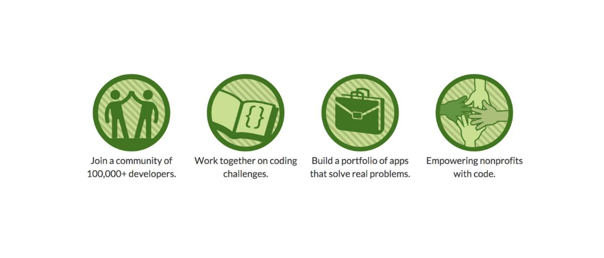

First FreeCodeCamp project is complete
Not long ago I have started my FreeCodeCamp path thanks to smartprogress.do to gain a better knowledge of frontend technology stack. I was somewhat sceptical that time about my capabilities in the area ("I am not a designer - I'm an engineer") and I did no like front end altogether. All that billions of JS-related technologies and HTML with CSS on top of the cake, gosh! Time has passed and I have catch myself today enjoining of frontend development. So, what is happened to me? Not much in reality.
{kind=link}
Smartprogress
First of all, thanks Lord I found this website. It has pretty ugly layout, bad translation and I really hate when something is broken there again, but it value lies in different place. It has opened for me the importance of collaboration with passionate people and how it can greatly motivate you toward your goals. I do not call you to start using smartprogress but I call you to start collaborate with people in any way you will find appropriate. It will have dramatic effect on you live - trust me, solitude seems not be the best choice in IT.
FreeCodeCamp
Thanks to my new friends at smartprogress I have fond this gorgeous online learning platform. It's fully free and has a great foundation idea ever - 'PRACTICE'! Yeap, "practise makes perfect", simple but powerful idea we forgot too frequently. To gain maximum from this opportunity I have combined it with the new learning style I have started to practise this year - little steps every day. Push forward every day no matter how far. Let it be just a little code change or a new book page - push forward! Step by step I have reached first FreeCodeCamp project.
Codepen.io
I was surprised of the project difficulty (that was a portfolio one). Perhaps old me would never be able to finish it not even because of it's complexity (in fact it is super easy) but due to my laziness or should I say overwhelming of guides, tutorials, projects, podcasts and video typical novice developer face every day. But I have started to work on it step by step and was surprised how fast in fact everything starts to go. Here we have another great platform I have started to use - codepen.io. It is simple online front end playground. Great tools has a major impact not only on our productivity but on our mental attitude and codepen helps me greatly - it's really convenient and aspirational for beginner to see instantaneous effect of his or her css tweaks. I encourage you to give this nice service a try, it's not only an online editor but also a social platform for frontend developers +great blog and podcast.
First Project
So my first project is complete now. It is ultra simple one page Ayn Rand tribute and I really enjoyed working on it. Personal Portfolio is 50% ready and I hope to complete it soon and use here - current about page is too simple as for me.
English
As always please excuse my poor English skill. I invest a lot of spare time in developing my language proficiency, but it is still not awesome enough. I would greatly appreciate any recommendation and corrections!
Comments
Comments powered by Disqus